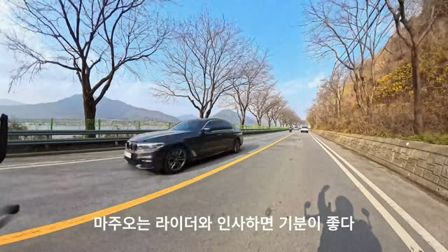

clipman · 최종 QA 보고서 · 2026-10-16 서울
clipman 최종 QA 보고서
결론: 개인용으로 지금 사용할 수 있는 상태. 검사 항목 7개 중 5개 통과, 결함 1건 발견 즉시 수정, 사용자가 직접 해야 하는 확인 1건 보류.
검사 환경: Mac mini(Apple Silicon), macOS 27.0.1, 기준 코드 main 025b3a3. 상세 수치와 명령은 QA 기록(개발자용)에 기재.
한눈에 보기
고친 결함: 처리 프로그램을 끄고 곧바로 다시 켜면 평소 쓰는 9000번 자리 대신 다른 번호로 열려서, 확장에 저장된 연결이 끊어지는 문제. 수정 뒤 다시 켜도 9000번을 그대로 사용.
클립맨이 하는 일과 검사 방법
검사 항목 7개 결과
| 번호 | 항목 | 쉬운 설명 | 결과 | 근거 |
|---|---|---|---|---|
| 1 | 상태 확인 | 코드가 GitHub와 같은지, 미반영 수정이 없는지 | 통과 | PR 3건 모두 병합, main이 GitHub와 동일 |
| 2 | 자동 검사 | 개발자가 미리 짜 둔 자동 점검 5종 실행 | 통과 | 기본 212개, 실물 13개, Node 5개, 확장 빌드, 브라우저 시나리오 1개 모두 통과 |
| 3 | 본인 Chrome 인수 | 사용자가 직접 Chrome에서 반복 사용 | 보류 | 사용자 부재. 같은 영상을 처리 프로그램에 직접 요청해 결과만 확인(아래 자막 실측) |
| 4 | 여러 영상 | 일반·4K·세로·연령 제한 영상에서 동작하는지 | 통과 | 3종 저장 성공, 연령 제한은 설계대로 실패 안내(문구는 결정 사항) |
| 5 | 취소와 재편집 | 중간에 취소해도 깨끗이 멈추고 다시 편집되는지 | 통과 | 가져오기·만들기 중 취소 뒤 남은 프로세스 0개, 원본 보존, 재편집 성공 |
| 6 | 실행기 | start.command를 다시 켜도 연결이 유지되는지 | 결함 수정 | 다시 켜면 다른 번호로 열리는 결함 발견, 회귀 검사 추가 후 수정, 9000번 유지 확인 |
| 7 | 결과 기록 | 기록을 남기고 핸드오프 문서를 갱신 | 통과 | QA 기록, 이 보고서, 핸드오프 3·4절 갱신, GitHub 반영 |
영상 종류별 결과
진짜 YouTube 영상을 처리 프로그램에 직접 요청. 「가져오기」는 YouTube에서 선택 구간을 받아 오는 시간, 「만들기」는 세로 쇼츠로 바꾸는 시간.
| 종류 | 구간 | 가져오기 | 만들기 | 결과 |
|---|---|---|---|---|
| 일반 저화질 영상 | 2초 | 5.6초 | 0.5초 | 저장됨 세로 1080x1920, 음성 포함 |
| 4K 영상, 긴 구간 | 40초 | 52.3초 | 8.6초 | 저장됨 40.0초, 음성 포함 |
| 세로로 찍힌 Shorts 원본 | 3초 | 12.7초 | 1.0초 | 저장됨 이미 세로라 잘리는 부분 없음 |
| 연령 제한(로그인 필요) 영상 | 2초 | 5.6초 뒤 실패 | 해당 없음 | 설계대로 실패 안내문 "YouTube에서 가져오기를 제한했습니다. 다른 영상을 시도해 주세요." |
사용자가 정할 것 1: 연령 제한 영상의 안내문. 지금 문구도 "다른 영상"이라는 다음 행동을 알려 주지만, 로그인이 필요한 영상이라는 이유는 알려 주지 않음. 문구를 "로그인이 필요한 영상이라 지금은 가져올 수 없습니다"로 나눌지 결정 필요. 로그인 영상 지원 자체는 현재 범위 밖.
자막이 박힌 영상의 잘림 실측
첫 인수 때 사용자가 쓴 영상(가로 4K, 자막이 화면 아래 중앙에 박힘)을 네 가지 구도로 다시 만들어 3초 지점 장면을 비교.

"마주오"만 남음
앞뒤가 잘림
"이 좋다"만 남음
자막 전체 보존, 화면은 작아짐
결론: 결함이 아니라 가로 영상을 세로로 자를 때의 한계. 세로로 자르면 가로 폭의 약 3분의 1만 남는데 자막은 폭의 절반을 차지하므로, 「좌우 위치」를 어디로 옮겨도 잘림. 자막을 살리려면 「전체 화면 유지」 선택. 「좌우 위치」는 자막이 짧고 한쪽에 치우친 영상에서만 효과.
발견한 결함과 수정
| 구분 | 내용 |
|---|---|
| 재현 | 처리 프로그램을 끄고 바로 start.command 실행. 새 프로그램이 52468번에서 열리고, 확장이 기억하는 9000번은 응답 없음 |
| 원인 | 끈 직후 9000번 자리에 "정리 중" 흔적이 남아 있어 같은 자리를 다시 잡지 못하고 빈 자리로 물러남 |
| 수정 | Mac 등에서는 정리 중인 자리를 다시 쓰도록 허용. Windows는 다른 프로그램이 쓰는 자리까지 가로챌 수 있어 종전 동작 유지 |
| 검증 | 회귀 검사 1개 추가(수정 전 실패, 수정 뒤 통과), 자동 검사 212개 통과, 실제로 다시 켜서 9000번 유지와 연결 코드 동일 확인, 두 번째로 켠 프로그램은 다른 자리로 물러남(가로채기 없음) |
이번에 확인하지 못한 것
- 사용자 본인 Chrome에서의 반복 사용. 사이드 패널에서 표시 → 편집 → 저장을 여러 번 반복하는 사용감은 사용자와 함께 하는 세션에서 확인 필요.
- 로그인이 필요한 영상. 연령 제한·회원 전용 영상은 현재 설계에서 가져오지 못하며, 지원 여부는 별도 결정.
- ZIP으로 받은 사본의 첫 실행 경고. 이번 검사는 git으로 받은 폴더라 macOS 보안 경고가 없었음. ZIP 사본은 경고가 뜰 수 있음.
- 처리 프로그램을 다시 켠 뒤 열려 있던 편집 탭의 화면. 이전 작업은 사라지며 "처리 프로그램이 다시 시작됐을 수 있습니다" 안내가 나가지만 화면 표시는 미확인.
- Windows에서의 재검증. 이번 수정은 Windows 동작을 바꾸지 않았으나 Windows에서 실행하지 않음.
- 전송량, 탭 녹화 음성, 모바일. 종전과 같이 미검증.
사용자가 정할 것 2: 상업용 배포 여부. 개인 사용을 이어가며 판단하는 현재 결정 유지. 결정 전 검토 항목은 Chrome 스토어 정책(다운로드 기능), ffmpeg 라이선스, YouTube 약관.
용어 풀이
- 처리 프로그램
- start.command로 켜는 컴퓨터 안의 프로그램. YouTube에서 구간을 받아 세로 쇼츠로 바꾸는 실제 작업 담당.
- 확장
- Chrome에 설치한 clipman. 시작·끝 표시와 편집 화면을 담당하고, 실제 처리는 처리 프로그램에 요청.
- 9000번 자리(포트)
- 확장이 처리 프로그램을 찾아가는 컴퓨터 안의 주소 번호. 연결 코드에 함께 저장.
- 화면 채우기 / 전체 화면 유지
- 세로 구도 두 가지. 화면 채우기는 가로 영상의 가운데(또는 좌우 위치로 고른 부분)만 세로로 잘라 꽉 채움. 전체 화면 유지는 원본 전체를 작게 넣고 위아래를 검정으로 채움.
- 회귀 검사
- 한 번 고친 결함이 다시 생기면 자동으로 알려 주는 검사. 고치기 전에 먼저 만들어 실패를 확인한 뒤 고침.
- 자동 검사(테스트)
- 개발자가 미리 짜 둔 점검 항목. 숫자는 통과한 항목 수.